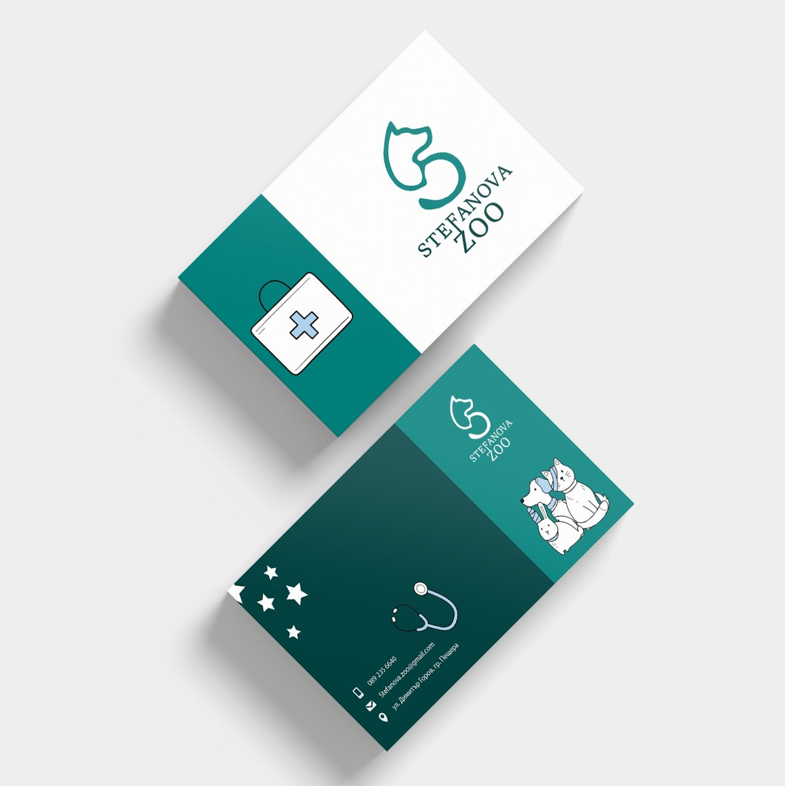

Selected Work



Print Design
Business card
I help brands communicate through thoughtful design and strong visuals.
View all Work
I’m a graphic designer focused on creating meaningful and visually strong design solutions.
Read more →